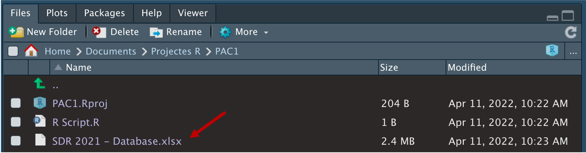

1.7 Importar arxius
Fins ara hem creat objectes de poc interès substantiu sobre la temàtica que estem estudiant. Encara que pugui ser apassionant viatjar per l’univers de Star Wars, la gràcia de crear objectes és, com hem esmentat anteriorment, aconseguir que continguin dades sobre temes que tinguin relació directa amb la nostra disciplina d’estudi. Això es fa mitjançant la importació d’arxius. El procediment habitual amb R serà el següent:
- Convertirem una base de dades en un objecte d’R. Per exemple, una base de dades de partits polítics, o de grups terroristes, o de bombardejos al Iemen.
- Treballarem l’objecte amb funcions. Les funcions ens permetran transformar les dades per tal que responguin les nostres preguntes.
Les dades que ens interessen se solen trobar en arxius que tenen formats que probablement ens són familiars, com .xlsx, .csv o .dta. Per transformar aquestes dades en objecte d’R, les funcions d’importació tenen noms bastant intuïtius. Per exemple:
- Si volem llegir un arxiu
csv, la funció serà habitualmentread_csv(), que és al paquetreadr. - Si volem llegir un arxiu
xlsx, la funció serà habitualmentread_xlsx(), que és al paquetreadxl.
1.7.1 Importar des d’una web
En algunes ocasions, importar un arxiu des d’una web pot ser la mar de senzill. Només ens caldrà conèixer l’adreça web on és, examinar de quin tipus d’arxiu es tracta, donar un nom a l’objecte i aplicar la funció que volem utilitzar. Per exemple:
- Web:
https://www.chesdata.eu/s/Candidate_Ukraine_2014.csv. - Tipus d’arxiu: Veiem que és un arxiu
csv. - Nom d’objecte:
ches. - Funció:
read_csv().
Pas 14. Importar des de pàgina web: A continuació importarem un arxiu que és a la pàgina web de la Chapel Hill Expert Survey (CHES). La funció que necessitem pertany al paquet readr, que haurem de tenir carregat si volem que ens funcioni:
ches <- read_csv("https://www.chesdata.eu/s/Candidate_Ukraine_2014.csv")És important remarcar que el nom de l’ubicació d’internet ha d’anar entre cometes. Un cop hem creat l’objecte ches, ja li podem aplicar algunes funcions com les que hem vist anteriorment.
ches
glimpse(ches)
unique(ches$party_name)
hist(ches$lrgen)
plot(ches$lrgen, ches$galtan)Si el codi anterior ens ha funcionat és perquè tenim carregat el paquet readr, que conté la funció read_csv(). De la mateixa manera, si volem importar a R un arxiu d’Excel, necessitarem les funcions read_xlsx() o read_xls() del paquet readxl, que també haurem de tenir carregat. Aquestes i altres maneres d’importar arxius les resumim a la següent Taula 1.19.
| Tipus d’arxiu | Paquet | Funcions |
|---|---|---|
| csv | readr | read_csv() o read_csv2() |
| xls | readxl | read_xls() |
| xlsx | readxl | read_xlsx() |
| dta | foreign | read.dta() |
| dta | haven | read_dta() |
| sav | haven | read_sav() |
| spss | haven | read_spss() |
1.7.2 Importació des del directori de treball
El més habitual, però, és que no sigui tan fàcil importar les dades directament d’internet. Normalment, el que haurem de fer serà entrar a la pàgina web on són les dades, descarregar l’arxiu al nostre ordinador, situar-lo al nostre directori de treball i importar-lo a R10.
Un aquest cas, l’únic que haurem de fer és assegurar-nos que tinguem l’arxiu en el directori de treball i posar el seu nom, entre cometes, a la funció d’importació.
ches <- read_csv("Candidate_Ukraine_2014.csv")`En el següent exercici descarregarem un arxiu d’Excel, el situarem al nostre directori de treball i el convertirem en un objecte d’R.
Exercici 2. Importa els SDG: Volem treballar amb els Sustainable Development Goals (SDG), que es troben a la web de Sustainable Development Report. A dins de la web, les dades són a la part dreta de la pantalla.

Descarregarem l’arxiu i ens assegurarem que estigui ubicat al nostre directori de treball.

També podem consultar el contingut del nostre directori de treball amb la funció següent.
dir()Finalment, com que tenim carregat el paquet readxl, transformarem l’arxiu d’Excel en un objecte d’R mitjançant la funció següent. Fixeu-vos que hem introduït l’argument sheet = 4 a la funció. Aquests arguments ens serveixen per donar indicacions més detallades a les funcions. En aquest cas, estem precisant que les dades que ens interessen són a la quarta pestanya de l’arxiu d’Excel.
sdg <- read_xlsx("SDR 2021 - Database.xlsx", sheet = 4)Un cop hem creat l’objecte sdg, ja li podem aplicar algunes funcions.
sdg
glimpse(sdg)
table(sdg$`Regions used for the SDG Index & Dashboard`)
hist(sdg$`Press Freedom Index (best 0-100 worst)`)Pas 15. Ordena el directori de treball: En alguns projectes, és possible que haguem de posar molts documents al nostre directori de treball. Una forma útil d’ordenar els arxius és utilitzar el sistema de carpetes habitual.
- A la finestra Files, crearem una carpeta que es digui
Datasets.
Posarem l’arxiu
SDR 2021 - Database.xlsxa dins la carpetaDatasets.Inclourem
Datasets/abans del nom de l’arxiu en la funció d’importació.
sdg <- read_xlsx("Datasets/SDR 2021 - Database.xlsx", sheet = 4)Com observem a la taula, podem distingir dos tipus de funcions csv. La funció
read_csv()importa els arxius que estan codificats en format americà, on la coma separa els valors i el punt indica els decimals, mentre que la funcióread_csv2()importa els arxius codificats en format europeu, on el punt i coma és el separador i la coma indica els decimals.↩︎Hi ha funcions com
download.file()que ens permeten automatitzar la descàrrega d’arxius des d’internet. No obstant, és una funció que genera errors en alguns ordinadors, de manera que no l’aprendrem fins més endavant.↩︎